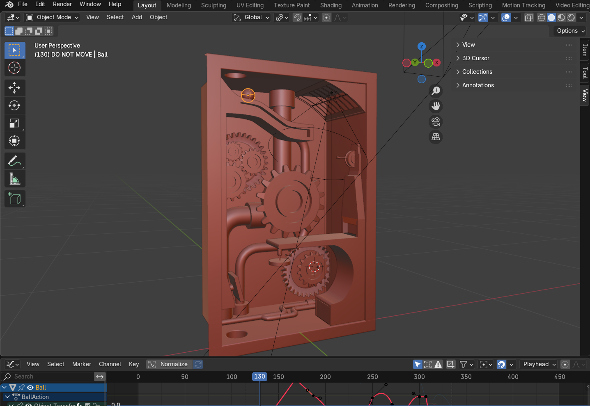

Dynamic Machine
Hoe je een balletje aan het rollen brengt...
Voor dit project heb ik in het programma Blender een Dynamic Machine geanimeerd. Hierbij rolt een bal
door verschillende obstakels tot aan een eindpunt. Timing, beweging en realistische interacties tussen
de bal en het obstakel, zorgen ervoor de animatie natuurlijk en geloofwaardig oogt.
Daarnaast ontwierp ik de onderdelen van de machine, zoals de tandwielen, magneten en de plunger. Dit
project heeft mijn vaardigheden in 3D-animatie en motion design verder ontwikkeld en verdiept.
